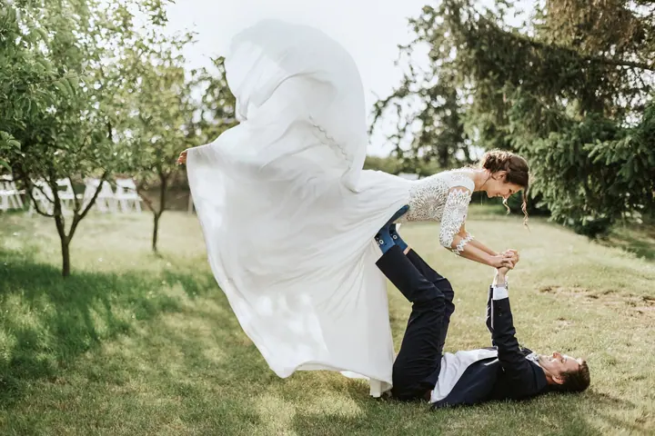
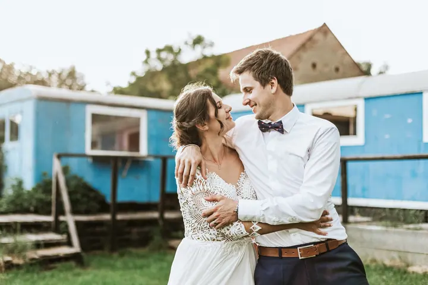
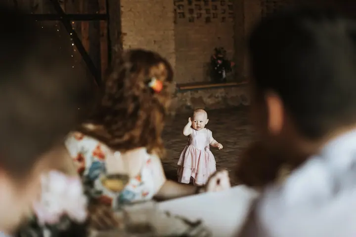

Svatby
Nabízím půldenní a celodenní svatební dokumentaci. Většinu dne fotím reportážně, chodím po špičkách a do dění nezasahuji, aby vznikly opravdové momentky.

Jmenuji se Martina Kovářová a fotím svatby, portréty a rodinné události v okolí Litoměřic. Ráda zaznamenávám okamžiky takové, jaké opravdu jsou, takže o mně většinou ani…
Rezervovat termínNa svatbách se pohybuji jako reportážní fotografka. Chodím po špičkách, jsem nenápadná a nechávám den plynout tak, jak má. Ideální svatba je pro mě ta, kde nikdo nestresuje, babičkám ukápne slza dojetím a druhý den se všichni sejdou u snídaně dojídat svíčkovou.


Rodiny a páry fotím už jen venku nebo u vás doma. Do focení co nejméně zasahuji, a tak místo póz před plátnem vzniká spíš dokumentární fotopříběh. Když chcete i video, přizvu svého přítele Luboše.
Mimo focení ulítávám na zeleném čaji, vonných tyčinkách a asijské kuchyni. Vlastně jakékoli kuchyni. A protože mě baví předávat, co umím, učím začátečníky zkrotit foťák a svatebním fotografům nabízím mentoring.
Co fotím
Nabízím půldenní a celodenní svatební dokumentaci. Většinu dne fotím reportážně, chodím po špičkách a do dění nezasahuji, aby vznikly opravdové momentky.
Spontánní chvilky, detaily a pohyb bez strojených póz. Fotím venku nebo u vás doma, i ve sněhu s termoskou se dá čarovat.
Focení jednotlivců, při kterém se vám věnuji víc a s pózami vám ráda pomůžu.
Individuální tříhodinový kurz: trocha teorie o světle a kompozici, pak společné focení a úprava fotek. Pro pokročilé svatební fotografy nabízím mentoring.
Postup
Pošlete mi termín a nezapomeňte napsat, kde se vaše svatba koná. Ozvu se s volnými termíny a ceníkem.
Probereme, jak si den představujete a jestli je pro vás lepší půldenní, nebo celodenní dokumentace.
Většinu dne jsem nenápadně v pozadí a fotím momentky. Když se naskytne skvělá příležitost, třeba vás přemluvím přebrodit řeku.
Fotky sama vyberu, upravím a předám vám je v digitální podobě, abyste se k vašemu dni mohli kdykoli vracet.
Otázky
Ano. Nejčastěji fotím v Litoměřicích, Roudnici nad Labem, Lovosicích, Mělníku, Ústí nad Labem nebo Mladé Boleslavi, ale přijedu za vámi i tam, kde to nebude úplně za rohem.
Základní balíček stojí 3500 Kč. Zahrnuje hodinu focení venku nebo u vás doma a minimálně 40 upravených fotografií, vybrané i v černobílé variantě.
Nevadí. Vezměte s sebou něco malého k snědku nebo oblíbenou laskominu. Když je nejhůř, focení zachrání blbnutí na prolézačkách nebo stavění domečků z mechu.
Ano, v tom případě s námi půjde i můj přítel Luboš. Balíčky rodinného videa najdete v ceníku.